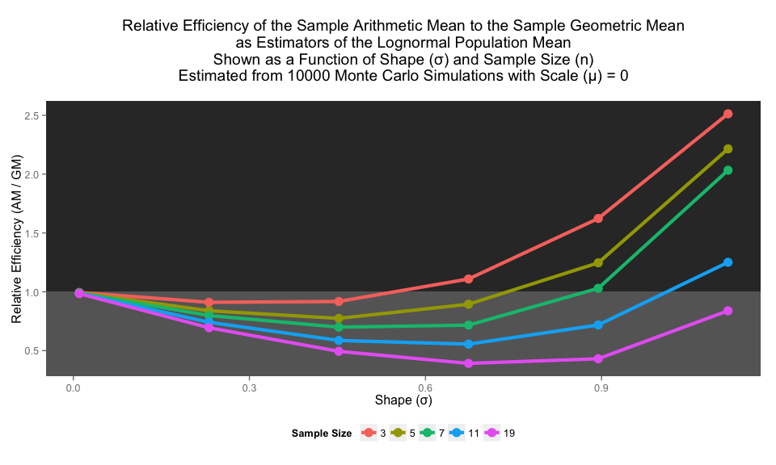
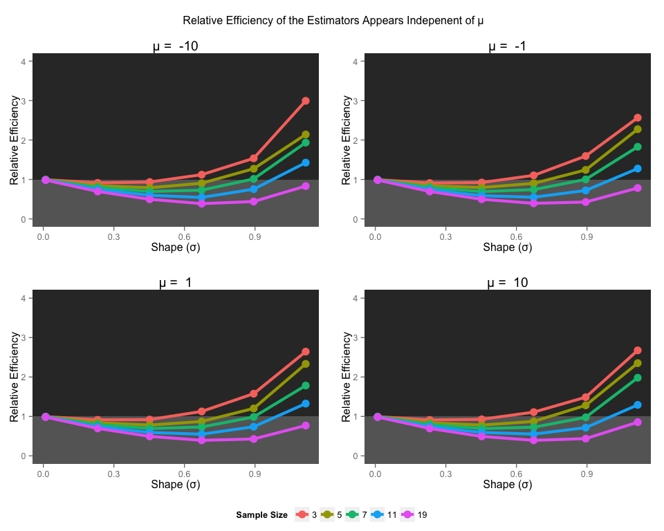
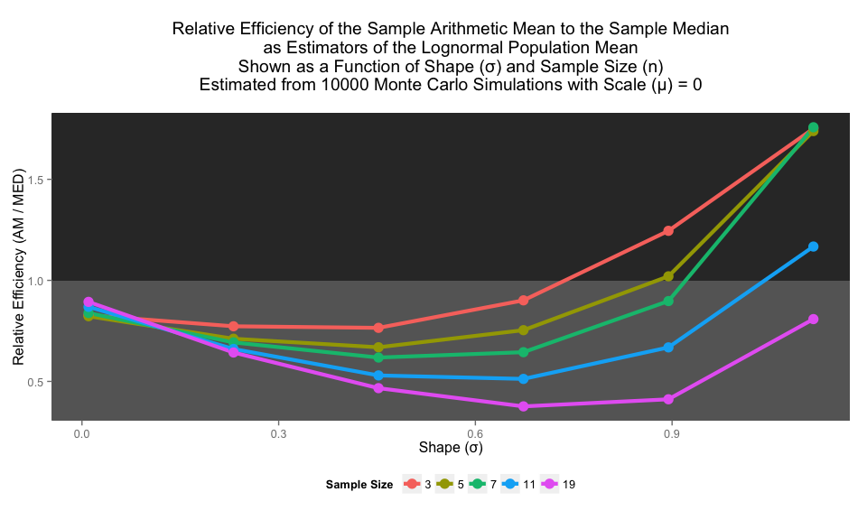

CEE 202 | Project 1 | Kevin Smith
require(plyr)
require(ggplot2)
require(gridExtra)
require(reshape2)
require(doMC)registerDoMC(cores = 4)gm <- function(x) exp(mean(log(x)))experiment <- function(n, mu, sigma){
sample <- rlnorm(n, mu, sigma)
m <- mean(sample)
g <- gm(sample)
d <- median(sample)
result <- data.frame(m = m, g = g, d = d)
}mse <- function(x, X){
x <- unlist(x)
se <- (x - X)^2
return(mean(se))
}monte.carlo <- function(n.samples, mu, sigma){
M <- exp(mu + sigma/2)
experimental.results <- replicate(
n.experiments,
experiment(n.samples, mu, sigma),
simplify = "data.frame")
mean.squared.error <- (adply(experimental.results, 1, mse, M))
t(data.frame(mean.squared.error, row.names = 1))
}n.experiments = 10000;
n.samples <- c(3, 5, 7, 11, 19)
mu <- c(-10, -1, 0, 1, 10)
sigma <- seq(0.01, 2, length.out = 10)
experimental.classes <- expand.grid(
mu = mu,
sigma = sigma,
n.samples = n.samples)set.seed(202)
rmse.values <- adply(experimental.classes, 1, mutate,
mse = monte.carlo(n.samples, mu, sigma),
eff = mse[,1] / mse, .parallel = TRUE)g.plotter <- function(this.mu){
sub <- subset(rmse.values, mu == this.mu & sigma < 1.2)
p <- ggplot(sub, aes(x = sigma, y = eff[,2]))
p <- p + geom_rect( xmin = -10, xmax = 10, ymin = 1, ymax = 10, fill = "grey20")
p <- p + geom_rect( xmin = -10, xmax = 10, ymin = -10, ymax = 1, fill = "grey40")
p <- p + geom_line(aes(color = as.factor(n.samples)), size = 1.5)
p <- p + geom_point(aes(color = as.factor(n.samples)), size = 4)
p <- p + theme(legend.position = "bottom")
p <- p + labs(title = (paste("Relative Efficiency of the Sample Arithmetic Mean to the Sample Geometric Mean\n as Estimators of the Lognormal Population Mean \n Shown as a Function of Shape (σ) and Sample Size (n) \n Estimated from", n.experiments, "Monte Carlo Simulations with Scale (μ) =", this.mu, "\n")))
p <- p + xlab("Shape (σ)") + ylab("Relative Efficiency (AM / GM)")
p <- p + scale_colour_discrete(name = "Sample Size")
p
}g.plotter(0)
legend <- ggplot_gtable(ggplot_build(g.plotter(0)))
index <- which(sapply(legend$grobs, function(x) x$name) == "guide-box")
legend <- legend$grobs[[index]]
g.plotter2 <- function(this.mu){
g.plotter(this.mu) + ggtitle(paste("μ = ", this.mu)) +
theme(legend.position = "none") + ylab("Relative Efficiency") + ylim(0,4)
}
p <- arrangeGrob(arrangeGrob(
g.plotter2(-10), g.plotter2(-1), g.plotter2(1), g.plotter2(10),
nrow = 2, ncol = 2,
main = "\n Relative Efficiency of the Estimators Appears Indepenent of μ"),
legend,
nrow = 2, heights = c(7.5,0.5))
p
d.plotter <- function(this.mu){
sub <- subset(rmse.values, mu == this.mu & sigma < 1.2)
p <- ggplot(sub, aes(x = sigma, y = eff[,3]))
p <- p + geom_rect( xmin = -10, xmax = 10, ymin = 1, ymax = 10, fill = "grey20")
p <- p + geom_rect( xmin = -10, xmax = 10, ymin = -10, ymax = 1, fill = "grey40")
p <- p + geom_line(aes(color = as.factor(n.samples)), size = 1.5)
p <- p + geom_point(aes(color = as.factor(n.samples)), size = 4)
p <- p + theme(legend.position = "bottom")
p <- p + labs(title = (paste("Relative Efficiency of the Sample Arithmetic Mean to the Sample Median\n as Estimators of the Lognormal Population Mean \n Shown as a Function of Shape (σ) and Sample Size (n) \n Estimated from", n.experiments, "Monte Carlo Simulations with Scale (μ) =", this.mu, "\n")))
p <- p + xlab("Shape (σ)") + ylab("Relative Efficiency (AM / MED)")
p <- p + scale_colour_discrete(name = "Sample Size")
p
}
d.plotter2 <- function(this.mu){
d.plotter(this.mu) + ggtitle(paste("μ = ", this.mu)) +
theme(legend.position = "none") + ylab("Relative Efficiency") + ylim(0,4)
}d.plotter(0)
p <- arrangeGrob(arrangeGrob(
g.plotter2(-10), g.plotter2(-1), g.plotter2(1), g.plotter2(10),
nrow = 2, ncol = 2,
main = "\n Relative Efficiency of the Estimators Appears Indepenent of μ"),
legend,
nrow = 2, heights = c(7.5,0.5))
pTMDL = 33
mu = log(60)
sigma = 0.4
n.samples = 1:32
n.experiments = 10000
experimental.classes <- expand.grid(
mu = mu,
sigma = sigma,
n.samples = n.samples)
experiment <- function(n, mu, sigma){
gm(rlnorm(n, mu, sigma))
}
monte.carlo <- function(n.samples, mu, sigma){
experimental.results <- replicate(
n.experiments,
experiment(n.samples, mu, sigma))
return(mean(experimental.results))
}
set.seed(202)
mean.gm.values <- adply(experimental.classes, 1, mutate,
mean.gm = monte.carlo(n.samples, mu, sigma),
.parallel = TRUE)
g <- ggplot(mean.gm.values, aes(x = n.samples, y = mean.gm)) + geom_point()
g <- g + geom_smooth(level = 0)
g <- g + ggtitle("Expected Value of the Sample Geometric Mean is versus Sample Size, with LOESS")
g <- g + xlab("Sample Size") + ylab("E[g]")g1 <- replicate(n.experiments, rlnorm(1, log(60), 0.4))
g4 <- replicate(n.experiments, gm(rlnorm(4, log(60), 0.4)))
g32 <- replicate(n.experiments, gm(rlnorm(32, log(60), 0.4)))
sampling.data <- data.frame(g1 = g1, g4 = g4, g32 = g32)
lines <- data.frame(type = "means",
values = c(mean(g1),
mean(g4),
mean(g32)))
base <- ggplot(sampling.data) + theme_bw()
base <- base + xlim(0, 150) + ylim(0, 0.1)
base <- base + geom_vline(x = TMDL, size = 2)
p1 <- base + geom_density(aes(x = g1),
alpha = 0.2, fill = "#F8766D")
#p1 <- p1 + geom_vline(x = mean(g1), size = 2,
color = "#F8766D")
p1
p2 <- p1 + geom_density(aes(x = g4), alpha = 0.2, fill = "#A3A500")
#p2 <- p2 + geom_vline(x = mean(g4), size = 2, color = "#A3A500")
p2
p3 <- p2 + geom_density(aes(x = g32), alpha = 0.2, fill = "#00BF7D")
#p3 <- p3 + geom_vline(x = mean(g32), size = 2, color = "#00BF7D")
p3
p3 <- p3 + gg("Title")
p <- ggplot(sampling.data, aes(x = g1))
p <- p + geom_density(alpha = 0.2, fill = "#F8766D")
p <- p + xlim(0, 150) + ylim(0, 0.075)
p <- p + geom_vline(x = TMDL, size = 2)
p <- p + geom_vline(x = mean(g1), size = 2, color = "#F8766D")
p
sampling.data <- melt(sampling.data)
p <- ggplot(sampling.data, aes(x = value, linetype = variable, fill = variable)) + theme_bw()
p <- p + geom_density(alpha = 0.2) + xlim(0, 150)
p <- p + geom_vline(x = 33, size = 1, color = "grey20")
p <- p + xlab("Geometric Mean of Samples")
p <- p + theme(legend.position = "none")
p <- p + geom_text("test", y = 0.075, x = 75)
p